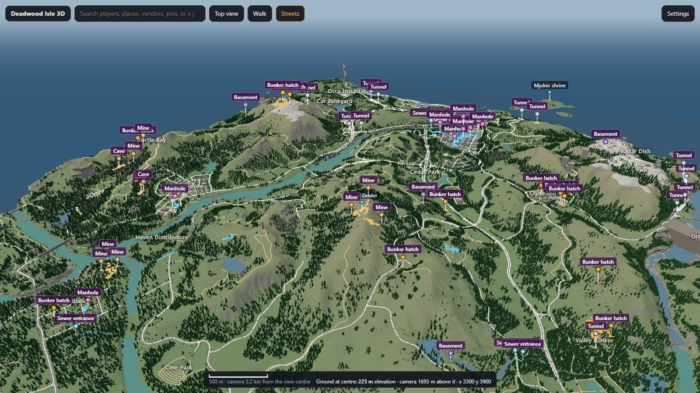
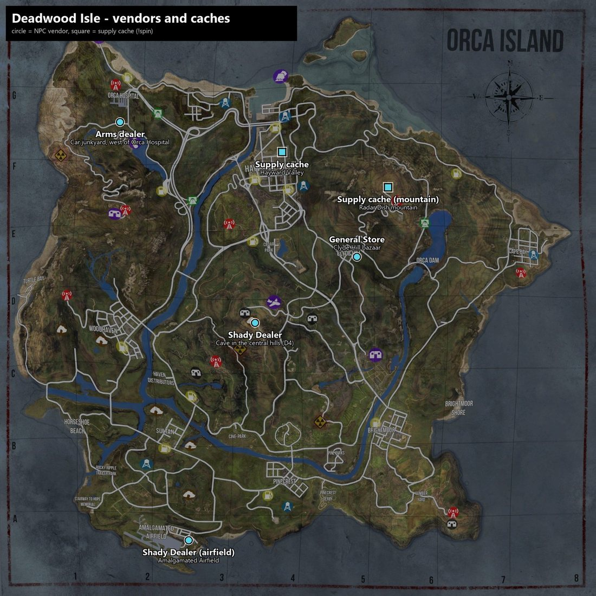

Join in a minute
Nothing to install by hand. Steam fetches the Workshop mods when you join.
- Find it. In Miscreated's server browser, search for Deadwood. It's listed as
NEW|US-East| Deadwood| 2x Loot/ Veh/ Harvest| Indestructible Plated - Join. Three mods download automatically: Admin Chat Commands, BMW M4 & Charger Interceptor (about 100 MB) and Deadwood Isle – Base Limits (about 70 MB).
- Read the banner. New arrivals get the server summary on screen. Type
!welcometo see it again.
- Region
- US East
- Mode
- PvP
- Slots
- 50
- Map
- Islands
- Restart
- Daily at 5 AM Eastern, with warnings
- Day/night
- Stock (nights run 4x faster than days)
- Wipes
- No schedule, announced days ahead
Rules
Keep it fair and keep chat civil.
- No cheating, exploiting or glitching through bases.
- No hate speech in chat. Trash talk is fine; slurs get you banned.
- Don't build inside or block spawn points, roads or loot buildings.
- Admin decisions are final. Admins don't play favorites and don't spawn gear for anyone in normal play.
What's different
The short version. Every card opens the details.
2.5x loot
More loot spots and up to 1,800 items in the world. 1.5x guns and ammo, while rare drops stay rare.
2x vehicles
Double spawns, faster respawns, and parked vehicles stay for 14 days.
Bigger harvests
2x logs, 4x rock and iron, 2x coal and pyrite. Hatchets never miss.
Plated can't break
Nothing damages plated parts, and wood has double the HP.
Bigger bases
600 parts, a 50 m build radius and 40 m of build height.
Vendors buy your gear
Guns, clothes, food, iron and trophies sell at rarity prices. Coin stacks hold 10,000.
Mystery crates
Spend amcoins at the supply caches for a rare item or a fully kitted legendary gun.
Thor's hammer
Lightning, ground slams and storms. Win it in Thor's trial.
Tuned cars
Engines, turbochargers and superchargers for the BMW M4 and Charger.
Drones
Scout with the Sparrows or fly a minigun gunship at your side. Rebuild a crashed courier Pack Mule and ride it.
EMP-7 & taser
Knock drones out of the sky and stall car engines from up to 300 m.
Night vision & thermal
Rare goggles that see in the dark or show hot bodies, on a 30-minute battery.
Wildlife
Alligators in the swamps and ponds, and giant scorpions that burst out of searches.
Base power
Generators, lights, a light switch and fridges that power your whole plot without wires.
Farming
Raise pigs and chickens, grow lettuce, and spread manure for 4x harvests.
Food spoils
Raw food rots in hours. A powered fridge keeps it fresh for a week.
Jobs
Deliver food orders from the supermarket freezers and sealed shipments across the island for amcoins.
ATM & debit cards
Bank your coins at home and earn up to 50% cash back at the vendors.
Missions
The Mechanic's House starts with a note in Hayward Valley, and courier Pack Mules crash for you to find.
Leave notes
Write a message on notebook paper for someone else to find.
Mailboxes
Put a mailbox on your plot and let people post you notes.
3D map
Explore the island in your browser, tunnels and bunkers included.
3D map of the island
The whole island in your browser, built from the game's own level files: terrain, every building and prop, roads, rivers and lakes, sewers, mines, tunnels and bunkers.

- Look around. Drag to move, right-drag to turn, scroll to zoom. Tap anything to see what it is.
- Walk it. "Walk here" drops you in at eye level: W A S D to move, Space to jump, F for ladders and doors, G to fly. A compass shows your heading, and a click copies your position.
- Streets. Bold road and path lines like a paper map. Settings turns layers on and off and shows the passages underground.
- Search. Towns, buildings (city halls, supermarkets, hospitals, gas stations…), vendors and entrances, or type coordinates as
x y. - Measure. Right-click, choose "Measure distance from here", then click a second spot to see the distance, the height difference and the heading. On a phone, tap a spot and press Measure on its card.
No player positions, vehicles or bases are shown.
Loot & harvesting
More of everything, without making rare drops common.
Loot
- 2.5x loot. Half of all item spawners are active (vanilla 20%), and the world holds up to 1,800 items at once (vanilla 750).
- More guns and ammo. Every loot table's weapon and ammo share is 1.5x vanilla, with the rest scaled down. Rare and epic weapons are untouched, so they stay rare.
- Legendary guns last longer. The AKM Gold, Mk18 Reaver, M16 Vietnam, RPK, M249, VSS, Grimey Rick and M97 wear half as fast.
Harvesting
| Node | Vanilla | Here |
|---|---|---|
| Full-size tree | 66 hits | 132 hits |
| Rock | 20 | 80 |
| Iron | 40 | 160 |
| Coal, pyrite | 40 | 80 |
- Hatchets never miss. The hatchet and the crafted hatchet harvest on every swing (in vanilla a quarter of swings give nothing). The game still caps it at one item per swing.
- The hatchet is fast, the axe is steady. The hatchet swings every 0.9 s (vanilla 1.25 s). The axe keeps its vanilla 1.5 s rhythm and the crafted hatchet is vanilla speed.
- Tools last longer. Axes and pickaxes wear a third slower: about 500 hits before they break (vanilla about 330).
Scrap metal piles and regrowth timers are stock.
Wildlife
Watch the water's edge, and watch what you search.
Alligators
- Where: the west swamp (around 1140, 2766, three gators), the central pond (3884, 4847, two), the Woodhaven pond (1565, 4066, two), the pond south-west of Brightmoor (5426, 3143, one) and the mountain lake (4387, 2830, one).
- They drift among the lily pads and bellow now and then.
- Come within about 20 m near the water and one hisses, swims at you, lunges up to about 8 m onto land and bites, about 15 damage a bite. At most two go for one person.
- Get about 28 m away and they slide back into the water.
They can't be killed yet. Keep your distance.
Giant scorpions
- A rare surprise. When you search (trash, crates, rocks, bushes and more) or harvest (chopping wood, mining coal, iron or rock, scrap metal), there's a small chance a creature jumps out. Now 1 in 10 of those is a giant scorpion.
Small critters
- Salamanders on the banks of the gator waters, and small scorpions in Death Valley (around 3298, 3101) and rocky spots. They're harmless.
Vehicles
More of them, and they stay where you park them.
- Parked vehicles keep their spot for 14 days untouched before they despawn and respawn elsewhere. Vanilla deletes an unused vehicle after 6 hours (bikes, quads, jet skis, tractors), 2 days (cars) or 3 days (trucks and buses).
- Charger Interceptor from the Workshop mod: police car spawns alternate between the stock cop cars and the Charger. Sedan spawns stay stock.
- The BMW M4 from the same mod doesn't spawn in the world.
- Crashed BMWs and Chargers are recovered. One wrecked in a crash while being driven (or just after) comes back. One shot up while parked stays a wreck.
Fell through the map? A vehicle that drops under the ground is put back where it last stood on solid ground, with what was inside it, and anyone riding in it is moved next to it.
BMW M4 & Charger tuning
Parts change how the two modded cars sound, and what comes out of the pipes.
How it works
- Boost: hold Shift, like on the dirt bike. It lasts a few seconds and recharges while you drive. Every BMW and Charger has it.
- Fit the parts in the car. An engine part swaps the engine sound. Without one, the car keeps the game's stock engine.
- Real engine sound. Both engines were recorded at six points from idle to redline, on and off the throttle. Everyone hears them, inside the car or standing outside.
- A turbocharger or supercharger needs an engine part too. With one fitted, the exhaust pops and spits flame on every shift, and pours out blue flame while you boost.
Parts
| Part | Adds | Weight |
|---|---|---|
| Inline-six engine | Recorded inline-six sound | 40 kg |
| V8 engine | Recorded V8 sound | 50 kg |
| Turbocharger | Turbo whoosh, and a blow-off hiss with flutter when you let off the gas after building boost. Pops and flames. | 20 kg |
| Supercharger | Supercharger whine, pops and flames | 30 kg |
- Engines: the arms dealer at the car junkyard, 2,500 amcoins each. Vendors pay 500 for one.
- Turbochargers and superchargers: loot only, in garage maintenance spots and tow trucks. They can't be sold.
Turbos and superchargers wear out. About 2 hours of driving takes one from new to blown ("Your turbocharger blew!"). Standing still with the engine running doesn't count, and engines never wear out. Type !partwear in the car to see what's left.
Pack mules & drones
Scout from the air, bring a gunship, carry your loot home, and bring other people's drones down.
Drones
- Sparrows: a pair of folding micro drones for scouting. Unarmed and light (0.5 kg).
- RK700 Gunship: a minigun drone that flies on your left and opens fire on hostiles within about 25 m. It only fires from a Gunship Ammo Box in its ammo slot: 1,000 rounds, refilled with Gunship Rounds.
- Fly one with a Drone Controller. Drop the drone, then turn the controller on from its right-click menu. Its screen shows battery, ammo, modules and alerts, and Ctrl flips through its pages, one of them a finder with distance and a compass. Turn Off lands the drone in front of you.
- Range: 50 m to switch on, or 150 m with the Long-Range Controller from UFO crashes and military airdrops.
- Any controller flies any drone once both have been in your inventory together. Whoever holds a drone owns it, and anyone can pick up a landed one.
- Drone Landing Pad: place one and your drones fly back to it from up to 1 km away.
Drones go on your belt or in your inventory, not a weapon slot. Bullets, explosives, melee hits and cars destroy them.
Modules, batteries & ammo
- Batteries: the Sparrows and the gunship each take their own. A standard battery gives 30 minutes of flight, a long-range one 60. Recharge them on a Solar Battery Rack.
- Sparrows modules: quieter props (Low-Noise, Stealth, Experimental), prop guards for flying indoors, a floodlight that comes on at night, and an AI module that warns you about players within 200 m.
- Gunship modules: Overclock I–III for faster fire, a scanner that warns of anyone within 100 m, and the Amalgamated cloak, which keeps it see-through except while it fires.
- Where to get them: drone and mule parts are split between the two supply caches and change every day. The airfield Shady Dealer stocks them all, and the Radar Dish cache always has the Sparrows and the Drone Controller. Gunship ammo is sold at the caches and the Shady Dealers, and turns up in ammo loot.
- Experimental parts (Experimental props, Experimental Overclock, Amalgamated cloak) come only from airdrops, plane crashes and, now and then, the cave Shady Dealer.
- Found gunships turn up at military tents, airfield hangars and planes.
Pack Mule
A six-rotor cargo drone you can ride. It carries 24 slots of cargo, follows you around, flies home to its landing pad, or you fly it yourself. Get one by rebuilding a crashed courier mule (see Mule Down). Its parts are also at the supply caches.
- Parts: 6 propellers, 4 car batteries and up to 3 modules. A lift module (Mk I, II or III) lets it carry you; it lifts 60 kg on its own, up to 260 kg with two Mk IIIs. The AI module lets it follow you and fly home. A cloaking module hides it.
- Riding: get on from its right side. W/S forward and back, A/D turn, Space up, Shift down, L lights. Hold Shift on the ground for 2 s to stop the props.
- Flight time: about 30 minutes per full battery, used only while it's in the air.
- It's yours once you ride it. Only the owner can give it orders, by chat or from a controller.
- Mule Landing Pads go on your plot, flat or raised. A Mule Transceiver at a powered base lets a long-range controller call your mule from anywhere.
Wrecks
- A downed drone leaves a wreck with its modules still inside. A destroyed Pack Mule leaves a Mule Wreck where it fell, plus cargo pods holding what it carried.
- Rebuild it: look at the wreck and choose Repair.
| Wreck | Repair with |
|---|---|
| Sparrows | 1 sheet metal, 1 electrical parts |
| Gunship | 3 sheet metal, 1 electrical parts, 1 Amalgaduino |
| Pack Mule | 5 sheet metal, 2 electrical parts, 1 Amalgaduino. It picks its cargo pods back up if they're within 10 m. |
- Follow the signal. Carry a switched-off controller within 500 m of a wreck and it beeps, and its screen points the way.
- Wrecks last 3 days, through restarts.
Bringing them down: EMP-7 & DW-7 taser
EMP-7 Disruptor
A double-coil EMP rifle. Each shot uses one EMP Cell and hits everything in a 300 m cone where you aim:
- Drones drop for 30 seconds, and their controllers go dark.
- A Pack Mule flying on its own comes down, ready to be taken. A ridden one is slowed and pushed low for 15 seconds.
- Car engines die for 30 seconds.
- Base generators trip off.
DW-7 Taser
A stun gun that reaches 300 m. Each shot uses one Stun Cartridge, and the dart has to hit. It works only on other players' drones.
- A drone stops responding for 15 seconds.
- A Pack Mule stops responding for 10 seconds.
Both guns, their EMP Cells and Stun Cartridges are sold at the Radar Dish cache and the Shady Dealers, and turn up in rifle, pistol and ammo loot.
Reloading: the taser is held one-handed, and you pull the spent cartridge off its front and snap a fresh one on. The EMP-7 reloads by swapping the battery pack on the gun.
Night vision & thermal goggles
Two rare pairs: one sees in the dark, the other sees body heat.
Using them
- Night Vision Goggles have green lenses, Thermal Goggles red ones. Wear them in the headlamp/hat slot.
- Turn them on or off with L, or right-click and choose Goggles: Turn On/Off while you wear them. A white flash and a click when they switch on.
- Night vision: a green image with a tube overlay and a battery icon.
- Thermal: the world goes dark and hot bodies glow: players, animals and mutants. A white battery icon sits bottom-right.
Daylight glare: from 8:00 night vision gets harder and harder to see out of, worst around 12:30, and it's clear again by 17:00. Under a roof or indoors only about 15% of the glare gets through. Before 8:00 and after 17:00 it's clear.
Battery & where to find them
- 30 minutes of battery in total, counted only while they're on. The display shows it in 10% steps (red at 20% and below), and so does the item's durability bar.
- At 0 they burn out: they switch off, you get a chat message, and the goggles are gone. A dead pair won't turn on, and a pair you find may be part-used.
- Rare loot at campsites and tents, hunting spots, police and military spots (footlockers too), with a small chance from the legendary crate spin.
Base building
Build bigger and taller, plate your walls, and your base stays yours.
- Plated parts are indestructible. Nothing damages them: not C4, not sledgehammers, not vehicles, not fire.
- Wood is twice as tough. Every wood part has double the HP (see the table). Metal, rock and stone parts are stock.
- Build tall. 40 m of vertical build room means towers and floating floors work.
- Power without wires. Generators, lights and fridges power everything on their plot sign. See Base power.
- Candles light without a lighter. The Halloween candle, Christmas candle and jack-o'-lantern switch on and off like lanterns, and each sells to vendors for 100.
| Part | Vanilla | Here |
|---|---|---|
| Wood wall 3x4, foundation, roof, stairs, walkway | 10,000 | 20,000 |
| Wood door, shutter, trapdoor | 5,000 | 10,000 |
| Wood gatehouse, watchtower, gallows | 20,000 | 40,000 |
| Plated anything | 22,500 | Can't be damaged |
| Metal wall, gate, gatehouse | 37,500 | 37,500 |
| Rock foundation | 22,500 | 22,500 |
Raiding, for reference
A sledgehammer does 60 per hit, a pickaxe or axe 30, a hatchet 22. A 20,000 HP wood wall takes about 334 sledgehammer hits or 667 pickaxe hits, and explosives still work on wood. A stock plated wall takes about 113 sledgehammer hits (4 minutes solo); here it can't be broken at all.
Base power
Generators, lights and fridges are base parts. They power everything on their plot sign, with no wiring to lay.
Generators & lights
- Generator: runs 24 hours on a can of diesel, an hour per biofuel or 30 minutes per charcoal.
- Solar Generator: needs no fuel at all.
- Both stay on through restarts. F switches one on or off, and switching it off darkens the whole plot. An EMP shot trips it.
- Work Lights come in six colours, reach 40 m, and each one can aim 5, 25 or 50 degrees down. Their beams cast no shadows, so a whole base of them stays easy on your frame rate.
- Each light switches on and off on its own, and only a lit light's pole hums.
- The Light Switch turns every light on the plot on or off. It shows on (green) while any light is lit and off (red) once they're all off, and has an Auto mode that follows day and night. After a restart the lights are off unless the switch is on Auto.
- Cables draw themselves from the generator to each part. Don't want them showing? The hardware stores will bury them for a fee.
- Power also runs the HAM radio, the ATM and the Mule Transceiver.
Generators, lights, the switch and fridges are sold at the hardware stores in Pinecrest, Brightmoor and Cape Bay. Generators and work lights you find in the world are the new kind.
Fridge
40 slots and a lock. While the base has power, food inside stays fresh for a week. Five hours in a row without power spoil everything in it. Stand next to it and type !fridge to check on it.
Fridges can't be crafted. The hardware stores sell them, and they work only on a plot.
Solar Battery Rack
- Charges car and drone batteries, day and night: about 40–50 minutes from flat to full. Drop a battery within 2.5 m and it goes onto one of the 4 bays; F takes it back.
- Up to 4 per base. Batteries stay on the rack through restarts and logouts.
- Where to find one: maintenance and tow-truck loot. Racks also stand at garages, gas stations, hardware stores, fire stations and the Hayward boatyard, often with a battery or two still on them; pick one up to take it home.
Farming & food
Raise pigs and chickens, grow lettuce, and keep your food cold. Raw food spoils here.
Pigs & chickens
- The Farmer in the Clyde Hill bazaar garden sells live pigs, hen and rooster crates, grain bags, feed and water troughs, the hen house, lettuce seeds and the HAM radio.
- Every animal needs a feed trough and a water trough within 15 m. Build them under Base Building, Structures, Farming (up to 6 per base). Each trough holds 40 and serves 4 animals, no more than 3 of them pigs.
- Fill the troughs by looking at them: lettuce, meat or grain in the feed trough, water from jugs, bottles and canteens in the water trough. Clean rain tops water troughs up (20 to 60 litres an hour, harder rain fills faster).
- Cover your troughs. Acid rain and radiation storms foul any trough left in the open: you get a warning, and it has to be dumped before your animals eat or drink from it again. A trough under a roof, a platform or a pop-up canopy stays clean. Under a canopy a water trough still fills when it rains; under a roof or a platform, or indoors, it doesn't, so fill it by hand.
- Release a pig from its right-click menu within 10 m of a feed trough. A pig eats 2 lettuce and drinks 2 litres an hour, a chicken a quarter of that. Pigs left unfed die after 48 hours, with warnings first.
- Hen House: hens lay an egg every 2 hours, but only while they eat grain. On lettuce or meat they stay alive and stop laying. A house takes 4 hens, with a rooster for every 2. Grain Bags come from the Farmer.
Anyone can pick up your animals and carry them off, and wherever an animal is set down becomes its new home.
Crops & manure
- Lettuce grows in a planter in 30 minutes and replants itself. Seeds come from the Farmer, the bazaar and loot.
- Manure: pigs and chickens drop piles, and a few piles make a Manure bag. Manure on a planter makes its next harvest 4x.
- Crops sell for double: a full stack of lettuce, potatoes, carrots, tomatoes, brush peas, beets, radishes or snap peas pays 100, pumpkins 150 and watermelons 200. See food prices.
Food spoils
- Raw food goes bad: in 2 hours on the ground, 3 hours in your pack (still counting while you're logged out) and 5 hours in a vehicle.
- Storage pauses it. Crates, safes, tents and other storage stop the clock, but raw food left in them turns rotten at the daily restart.
- A powered fridge keeps food a week.
- Fresh to start: harvests and eggs start fresh, and loot only starts to age once someone picks it up.
Vendors & amcoins
Most of what you find is worth something here.
Selling
- Most gear sells. Vanilla vendors buy only a handful of items. Here they buy clothing, weapons, equipment, repair kits, consumables, magazines and tents. Prices follow rarity: M249 2,000, Mk18 Reaver 1,500, AKM Gold 1,500, VSS 1,200, AKM 300, Katana 150, Patrick's axe 150, sledgehammer 100.
- Food, crops, iron and medicine sell too. Iron ingots 200, antibiotics 100, watermelons 200, pumpkins 150, a stack of any other crop 100. Every food price is in the table below.
- Trophies pay. Space helmet 250, chrome cross necklace 200, gold skull mask 100, gold 100, silver skull mask 75, silver 50.
The game's own sell rules still apply: the item must be undamaged and a full stack, and containers and magazines must be empty. Base parts and traps can't be sold.
Amcoins
- A ledger stack holds 10,000. A sale pays in full, and your inventory shows the real count.
!coinsadds up every stack you carry.- Spend them at the vendors, on the mystery crates, or on engines for your BMW or Charger.
- Buying costs 5x what a vendor pays. A vendor pays 500 for an engine and sells one for 2,500.
- Bank them in your base's ATM and pay with a debit card for cash back.
What food sells for
| Food (stack size) | A vendor pays per full stack |
|---|---|
| Lettuce (10), potatoes (10), carrots (20), tomatoes (20), brush peas (20), beets (30), radishes (30), snap peas (30) | 100 |
| Pumpkins (10) | 150 |
| Watermelons (6) | 200 |
| Eggs (10), berries (10), apples (5) | 100 |
| Deer, donkey, pig (ham), ram and chicken meat (5) | 60 raw, 100 cooked, 150 cured (chicken can't be cured) |
| Bear, wolf and scorpion meat (5) | 100 raw, 170 cooked, 250 cured |
| MRE, chocolate box, champagne, cereal, gingerbread men (5), bread (10) | 100 |
| Mushrooms (5) | 50 |
| Mini bottles (gin, vodka, whiskey), nut spread, canned meat, ravioli | 40 |
| Corn, peaches, pears, beef stew, tomato juice, soup, tuna, peas, dog food | 30 |
| Hershey's, beer, sodas, energy drink, water bottle, jelly, peanut butter, eggnog, canteens, water jug | 20 |
| Animal guts (5), animal fat (250) | 20 |
Vendors only take full stacks, and buying costs 5x these prices. Burned, rotten and seasoned food doesn't sell, and neither do cooked crops, stews, sandwiches, soups, coffee, milk, cheese, seaweed or clams.
Where to trade


General Store
Clyde Hill bazaarA rotating selection of about 40 items drawn from every vendor list on the map: guns, ammo, food, crafting and clothing, plus the Shady Dealer's stock.
Arms dealer
Car junkyard, west of Orca HospitalCommon rifles, SMGs, shotguns and pistols with their mags and ammo, plus the inline-six and V8 engines. Walk in through his cabin door and he raises his rifle and aims at you, then lowers it.
Shady Dealers
A cave in the central hills (grid D4), and behind the shop counter at Amalgamated AirfieldAK-Val, AK5D, SAS12, ammo and armor, with a small chance of an M249 or M97.
Supply cache
Crashed airplane building, Hayward ValleyAn airdrop crate that trades like a vendor, with the Shady Dealer's stock and half of the drone and mule parts (they swap daily). It runs the mystery crate.
Mountain cache
Radar Dish mountain, up the stairs on the platform marked by a skull candleShady stock plus every magazine and ammo box for the prize guns, the other half of the drone and mule parts, the Sparrows, the Drone Controller and the EMP-7 and taser. 15 mutants and 3 armored brutes stand guard. Clear them and they come back once nobody has been within 150 m for 10 minutes. It runs the legendary crate.
The Farmer
The garden at the Clyde Hill bazaarSeeds, troughs, live animals, grain and the HAM radio, and delivery orders. See Farming.
Hardware stores
Pinecrest, Brightmoor and Cape BayGenerators, lights, the light switch, fridges and the mailbox, wire burying, and jobs. See Base power.
Jobs, shipments & banking
Earn amcoins running deliveries across the island, and keep them safe at home.
Delivery orders
- Get an order from the Farmer (once every 30 minutes) or from your own HAM radio (every 15 minutes). Read the order to see the job in chat.
- Deliver food (lettuce, crops or other food) to a supermarket in Cape Bay, Sultan, Woodhaven, Pinecrest or Hayward Valley, or to the Brightmoor 24-hour store. Choose Deliver Order within 30 m of the drop point.
- Pay: 1.5x what the goods are worth, plus 60 amcoins per km. Thirty lettuce to Cape Bay pays 590 (lettuce counts as 10 each here, whatever vendors pay).
- Deliver Order, Deliver Shipment and Pick Up Order are the first menu option at the place your order or shipment is due. Afterwards the menu goes back to normal.
- No time limit. Whoever holds the order collects the pay.
- Some orders are pickups: collect a sealed grocery crate at a store and take it where the order says.
HAM radio: one per base, under Base Building, Utilities (1 Amalgaduino, 3 electrical parts, 10 scrap metal), or from the Farmer. It needs power.
Shipments
- Job NPCs hand out sealed 10 kg crates to deliver: at the churches in Sultan, Hayward Valley and Cape Bay, Orca Hospital, Hayward Valley city hall, the Brightmoor motel and the supermarkets, and at the arms dealer, the General Store, the Shady Dealers and the hardware stores. Look at them for the job lines.
- Pay: arms shipments 900 and supply shipments 500, plus 60 per km. Each place gives you a job once every 30 minutes.
- Don't open it. Opening a shipment, or sitting on one for 24 hours without delivering it, gets you banned from jobs. A warning comes an hour before. Dropping or stashing the crate is fine, dying with it doesn't count, and other players can steal it.
- Changed your mind? Sell Order cancels a job without a ban. Selling an order to another job place (Sell Order, 25 coins) also takes back the crate or the freezer food you took for it.
- Banned players get no jobs, can't trade with vendors, and lose premium debit cards. A Shady Dealer will sell you a Forged ID for 300 amcoins: right-click it and choose Use Forged ID to clear the ban.
Supermarket freezers
- Every supermarket has a deep freezer by its job NPC, holding 8 kinds of food, one order's worth of each. The stacks add up exactly to an order.
- A supermarket's Delivery Order is written from its own freezer's food, to another supermarket that doesn't stock those foods.
- Take the food for your order from that freezer, or deliver your own for more pay. Freezer food pays only the delivery part.
- Take only what's on your order. Take anything else and you have 30 seconds to put it back, or you're banned from supermarket jobs.
- Lift the ban with a Food Offering: 20 pieces of food, given at any supermarket.
ATM & debit card
- Build an ATM at your base: Base Building, Utilities (10 sheet metal, 1 electrical parts), one per base, and it needs power. The Shady Dealers sell them too. Your first ATM comes with a debit card.
- Deposit and withdraw at the ATM: 100, 500, a stack, or everything. Right-click your card to check the balance.
- Pay with the card. At a vendor it puts up to 4 stacks of your balance in your pack. Your own coins are spent first, and whatever's left goes back when you walk away.
- Cash back on everything you buy goes to your balance: 15% standard, 25% silver, 35% gold, 50% black.
- Premium cards drop in airdrops, military and electronics loot, and a Shady Dealer now and then has a black card.
- Cards work only for their owner and vanish 15 minutes after being dropped. Lost yours? The ATM always makes a standard card for 100, and for a week after you last carried a premium card it can make that one again, for its tier's fee. A jobs ban takes that away.
- Don't log out or die at a vendor with the card's coins in your pack: logging out charges them to your balance, and dying loses them.
Mystery crates
Stand next to a supply cache and type !spin. The coins come straight out of your ledger.
Mystery crate
500 amcoinsSupply cache, Hayward Valley
One random rare item out of 18, worth 100 to 2,000 at the vendors. Guns come with two full magazines.
- Katana
- Black Widow
- Patrick's Axe
- Her Majesty
- Sledgehammer
- M16 Vietnam
- Mk18 Reaver
- AKM Gold
- RPK
- VSS
- M249
- M97
- Grimey Rick
- Rifle silencer
- Gold skull mask
- Gold cross necklace
- Chrome cross necklace
- Space helmet
Legendary crate
1,000 amcoinsMountain cache, Radar Dish mountain
Always a gun, fully kitted: a loaded magazine plus a scope, silencer, light, laser or grip wherever the gun takes them, and 3 spare magazines.
Legendary · 60%
- The Dictator
- The Reaver
- M16 Vietnam
- The Comrade
- M249
- VSS
- Grimey Rick
- M97 grenade launcher
Rare · 40%
- AT15
- AK5D
- M40A5
- Vector
- SAS12
- MP5
- 2 spins per person per cache per day. They reset at midnight server time.
- Make room first. A gun or melee prize needs a free weapon slot, anything else a free inventory slot. If there's no room, nothing is charged and the spin doesn't count.
- Big wins get announced. Prizes worth 200 or more show up in chat, and a lucky spin can even win Mjolnir.
!spin oddslists the prizes and chances of the cache you're standing at.
Mjolnir & Thor's trial
Thor's hammer is on the island. Only a few exist at once, and only the worthy can hold one.
Valkyrie's Flight
Lightning strikes where it lands, then it flies back to you.
Aesir Sweep
A ground slam.
Thor's Wrath
A storm.
Owning a hammer
- It never hurts its holder. Mutants and animals it kills vanish in smoke.
- Dropped, it plants itself where it falls, and nobody else can lift it. Walk back to it, or take your Norse Medallion in hand to call it home. If your hammer came with one, it's in your pack while the hammer is away. Called home, the hammer sets every mutant and animal around you on fire.
- Legendary hammers have 100 charges. A throw costs 1, a slam 5, a storm 10.
!mjolnir chargesshows what's left. - It goes home on its own if it's left planted for 4 days or kept in a stash for a week.
Winning one
A lucky spin at a supply cache, or Thor's trial:
- Find Mjolnir's shrine and step inside the ring of its guardians. You're handed Thor's Challenge, a scroll naming two offerings.
- Find Thor's talisman. The hint is in chat, and
!hintrepeats it. Odin's light hangs in the sky above wherever the talisman waits, but only players carrying the scroll can see it. - Bring the talisman and both offerings to the shrine. The first player to bring everything back wins the hammer.
Every time the shrine hammer breaks and flies home, a new trial begins somewhere else on the island.
Spoilers: where the talismans are hidden
Last warning. The trial is meant to be solved from its hint, and these are the exact places the talisman waits. If you only want a nudge, type !hint in game instead. Each place is folded on its own, so you can open just one.
Mjolnir's shrine
On the north coast around 4771, 8032, ringed by six armored brutes.
"I pray you find it."
One of the three churches, chosen at random each time this trial comes round: Sultan (2397, 2222), Hayward (3978, 6672) or Cape Bay (7060, 4980). Inside the church.
"Do not give up hope on your quest…"
The Stairway to Hope, at the top, around 1080, 990 (height 74).
"Hope climbs the stairs, but its secret sleeps in the dark beneath them."
The cave under the Stairway to Hope, around 1072, 1049 (height 27).
"Clear out the shelter by the lumber yard…"
The bunker by the lumber yard in the far south-east, around 6363, 956. It's full of mutants; the talisman appears in the middle once every one of them is dead.
"…the bridge of life and take the leap of faith."
Under the Broken Bridge: jump, then swim back. It's on the rocks right below the bridge, around 1248, 7950 (height 17).
"…where floodwaters are held at bay… a watery grave."
At the foot of Orca Dam, between the two pillars, under the water by the graves, around 5904, 4702. Thor's blessing keeps you from drowning there, and taking the talisman carries you out.
Missions, notes & mail
A story hidden around the island, crashed courier mules to track down, a way to leave your own notes, and a mailbox to collect them in.
The Mechanic's House
A mission starts with a note on the office desk of one of the two auto shops in Hayward Valley. Follow where it leads.
Read a note by holding it, or type !read while you carry it. The 3D map helps you find the places it sends you.
Notes
Notebook paper turns up as loot, and the supply caches sell it for 1 amcoin a sheet. Type !note and your message to write on a sheet. You get a Written Note to drop, stash or hand over.
Anyone can read it by holding it, or with !read. Notes show only the message, though admins can see who wrote them.
Mailboxes
Build a Mailbox on your plot, or buy one at a hardware store. Anyone can post a Written Note in it, and only you take your mail out.
When you log in with mail waiting, you're told how many notes are in your box. !mail checks any time.
Mule Down
About once an hour, while fewer than three Pack Mules are out on the island, a courier Pack Mule loses lift and crashes. Everyone gets a chat line saying roughly where. Watch the sky: it dumps its two cargo pods on the way down and leaves a tall smoke column where it hits.
- Search the wreck. Inside are the flight log and a drone controller.
- Turn the controller on while you carry the log. Its finder points to the cargo pod with the black box, then to the other pod, and always shows the way back to the wreck. Once you've visited both pods, it points to the wreck.
- The pods hold the propellers, a car battery, a Damaged Lift Module and the courier's cargo. The damaged lift only reaches 50 m and breaks after 30 minutes of flight.
- Back at the wreck, choose Repair with 5 sheet metal, 2 electrical parts and 1 Amalgaduino. Whoever rides the rebuilt mule first owns it.
- The wreck stays for 3 days, through restarts.
Chat commands
Type these in chat. They work for everyone.
| General | |
|---|---|
!welcome | Shows the welcome banner again. |
!pos | Your coordinates and compass heading. |
!corpse | The coordinates of your nearest bodies, so you can go get your gear back. |
| Coins & crates | |
!coins | Your amcoin balance across every stack you carry. |
!spin | Opens the crate at the supply cache you're standing at. |
!spin odds | That cache's prizes and chances. |
| Cars, notes & mail | |
!partwear | How much life the car's turbocharger or supercharger has left. |
!note message | Writes your message on a sheet of notebook paper. |
!read | Reads the notes you're carrying. |
!mail | How many notes are waiting in your mailbox. |
| Farm & food | |
!farm load | Next to a feed trough: puts all the lettuce and meat you carry in it. |
!farm pour | Next to a water trough: pours in every water container you carry. |
!farm dump | Empties the trough you're standing by. |
!fridge | Checks the fridge you're standing next to. |
| Pack Mule | |
!mulestatus | The nearest mule within 30 m: what's fitted, whether it can fly (and why not), its speeds and its home pad. |
!mulefollow | Your mule follows you, on foot or in a car, and lands beside you when you stand still. Needs the AI module. |
!mulehome | Your mule flies home to its landing pad. |
!mulestop | Lands your mule wherever it's flying (within 400 m). |
!mulepads | Lists the Mule Landing Pads on your plot. |
| Mjolnir | |
!thor | How Mjolnir works. |
!hint | Repeats the current trial's hint. |
!mjolnir charges | How many charges a legendary hammer has left. |
Restarts, wipes & good to know
Daily restart
Every day at 5 AM Eastern, with in-game warnings first. Bases, vehicles and your inventory survive it; bodies and dropped items don't.
Wipes
No schedule. The world wipes only when base clutter hurts performance, when new players can't find room, or when a game update forces it. Wipes are announced in the join message at least a few days ahead.
Gameplay
- Prone is enabled.
- Halloween runs all autumn: seasonal loot, candles and jack-o'-lanterns from October 1 to November 30.
- Carry up to 100 kg.
Big vehicles
The game's anti-cheat measures reach to the vehicle's center. On the 5-ton and the bus, crouch against the middle of the vehicle's side before swapping wheels or parts, or the server rejects the move.
Contact
Find the admin, Toll Troll, on the server. For problems with this page or the server, open an issue on GitHub.
Changelog
Newest first. All dates are 2026.
Night vision and thermal goggles: rare loot, L to switch them on, a 30-minute battery, and daylight glare on night vision. Every supermarket has a deep freezer its delivery orders are filled from; take only what's on your order. Deliver and pick-up options come first in the menu where they're due, and selling an order elsewhere takes back its crate or freezer food. The arms dealer aims his rifle at you when you walk into his cabin. BMWs and Chargers wrecked in a crash are recovered. New food prices for crops, meat and everything else. That night: alligators in the swamp, the ponds and the mountain lake (they can't be killed yet), salamanders and small scorpions, and giant scorpions that sometimes burst out of searches and harvests.
Farming: hens only lay eggs while they eat grain. Clearer descriptions on the Farmer's items. Base lights reach twice as far and no longer light up the wall behind them; set roof lights to Low to light the ground. Water troughs under a roof or indoors no longer fill with rain (a canopy still lets it in). The DW-7 taser and the EMP-7 got their own handling: the taser is held one-handed and reloads by swapping the cartridge on its front, the EMP-7 by swapping its battery pack. Later: base lights no longer cast shadows, which fixes the frame rate drop with lights on.
Drones: the Sparrows and the RK700 gunship, with modules, batteries, gunship ammo, landing pads and wrecks you can rebuild. Pack Mule parts are at the caches. The EMP-7 Disruptor and DW-7 taser. Base power without wires (generators, solar generators, work lights, a light switch and fridges) from three new hardware stores, plus Solar Battery Racks. Pig and chicken farming with the Farmer at the Clyde Hill bazaar, and crops sell for double. Raw food spoils. Delivery orders, shipments and the Forged ID; ATMs and debit cards with cash back; mailboxes. Cleared mountain cache guards come back after 10 quiet minutes. Cars: the revs follow the real engine again without the wobble on gear changes, the low gears are longer, and the blow-off is a real air hiss that no longer fires in corners or over bumps. Fix: no more engine sound left behind where a car used to be. Later that day: weapons, ammo, magazines and attachments cost more (a common rifle about 1,500 amcoins, a magazine 75), and the crates cost 500 and 1,000. Each base light switches on its own, and the switch shows whether any light is on. A lost premium debit card can be replaced for a week. The 3D map can measure distances. That night: Mule Down. Courier Pack Mules crash around the island; follow the drone controller's finder to their cargo pods and rebuild the wreck to ride it.
Amcoin stacks hold 10,000. The turbo's blow-off plays only when you let off the gas, never on gear changes. 3D map: F takes you through doors, a compass, and searchable buildings. Fixes: BMWs and Chargers from missions and events no longer lose what's inside them when everyone leaves the area, and items in a car no longer turn back into older ones after a restart.
Notes: write on notebook paper with
!noteand read with!read. Notebook paper is loot and sells at the supply caches.Fix: BMWs and Chargers keep their parts through restarts.
The two-vehicles-per-base rule is gone: keep as many vehicles as you like.
Tuning parts for the BMW and Charger: inline-six and V8 engines at the arms dealer, turbochargers and superchargers as loot, and turbos and superchargers wear out (
!partwear). The Mechanic's House mission. Vehicles that fall under the map are recovered. Carry up to 100 kg. Vendors buy food, crops, iron and medicine.BMW M4 and Charger: recorded inline-six and V8 engine sounds, six-speed gearboxes, Shift boost with blue NOS flames, the BMW blow-off valve and downshift burbles, exhaust fire on every shift.
Mjolnir and Thor's trial: legendary hammers (100 charges) from the supply-cache spins and from Mjolnir's shrine, the Norse Medallion, six rotating talisman hunts with Thor's Challenge scrolls,
!thorand!hint.
Older changes
Mountain cache on the Radar Dish mountain: shady stock plus ammo, the 50-coin legendary crate (kitted guns, 3 mags), guarded by 15 mutants and 3 armored brutes around the clock. Food vendor retired from the bazaar. Legendary guns wear half as fast.
Mystery crate at the new Hayward Valley supply cache (
!spin, 100 amcoins, 2 a day, guns come with two mags). Second Shady Dealer at Amalgamated Airfield. Crafting and clothing vendors removed from the bazaar (the General Store covers both). Amcoin stacks hold 255 and sales pay up to 255; space helmet now 250.!coins. Vendor map added to this page.Halloween and Christmas candles and jack-o'-lanterns light without a lighter and sell for 100; on-screen welcome banner and
!welcome; two-vehicles-per-base rule.Vendors buy most gear at rarity-based prices, trophies included, and the 100-coin payout cap is gone. General Store at the bazaar sells a bit of everything; arms dealer moved to the car junkyard; Shady Dealer moved out of the sewer. Hatchet swings 0.9 s and the axe is back to its vanilla 1.5 s; axes and pickaxes wear slower; rock and iron nodes 4x, coal and pyrite 2x.
!posfor everyone.Daily restart moved to 5 AM Eastern.
Parked vehicles last 14 days before despawning.
Axe swings 0.9 s (hatchet 1.25 s); Base Limits mod v7 carries the tool definitions. (Reversed on Oct 18.)
!corpsefor everyone; light-switch investigation closed (there's no master switch in the game).Loot 2.5x with a 1.5x weapon and ammo share; plot sign 600 parts, 50 m, 40 m; generators run 10 and 30 lights, solar is silent; prone enabled; Base Limits Workshop mod.
2x harvest, axe and hatchet rebalance, admin commands mod, BMW & Charger mod (Charger in police spawns), "NEW" tag.
2x loot, 2x vehicles, wood 2x HP, indestructible plated, server renamed to Deadwood Isle, 50 slots.
Server launched.